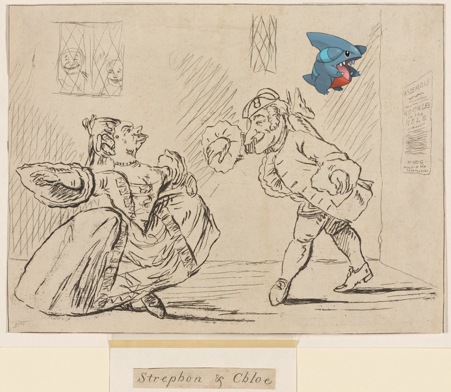

-
 Lickitung on U.S.M.S. "Philadelphia," breakfast.
Lickitung on U.S.M.S. "Philadelphia," breakfast. -
 Machamp ; George Mason.!
Machamp ; George Mason.! -
 Diancie ; H. C. Pulliam!
Diancie ; H. C. Pulliam! -
Swampert, Woobat + Two women walking along street, Natchez, Mississippi.
-
![| Brooklyn V. 5, Plate No. 12 [Map bounded by Broadway, Ralph Ave., Quincy St., Patchen Ave.]. http://digitalcollections.nypl.org/items/aaee0da0-c5fd-012f-08c9-58d385a7bc34](media/finding-UuArUFUv.png)
-

-

-

-
![Wynaut @ Letter to Gen. [Edward] Hand http://digitalcollections.nypl.org/items/1198b5f0-0028-0130-1c20-58d385a7bc34](media/finding-dPsmAgwU.png) Wynaut ; Letter to Gen. [Edward] Hand.
Wynaut ; Letter to Gen. [Edward] Hand. -
 Combee @ Vue du Pont Kasr - el - Nil. Nº 260.
Combee @ Vue du Pont Kasr - el - Nil. Nº 260. -
Gible | Strephon & Chloe!
-

-